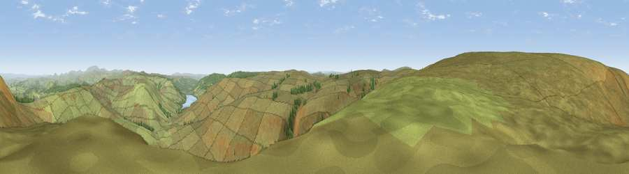

Viewpoint c12097_7381
#7019 in England · top 18% of its area beats it · — · open accessWhere it is
The exact computed spot (NT 69075 04900). Click the marker for map links.
Public access: this spot lies on mapped open-access land (CRoW Act 2000) — you may roam here on foot. Computed from Natural England's CRoW access layer and OpenStreetMap rights of way — not the legal definitive map. Always verify locally.
The view, rendered

A 360° render of this exact spot computed from the terrain model, tree cover and land cover — summer colours, afternoon light, calibrated against photographs of famous viewpoints. Real trees, hedges and buildings will differ in detail.
The panorama
Grey silhouette: terrain skyline in each direction (720 bearings, Earth curvature and refraction included). Dashed green: skyline with trees (+15 m) and buildings (+8 m) as obstacles. Blue strip: how far the ground is visible on each bearing.
Where the view opens
Wedge length = distance to the farthest visible ground on that bearing (vegetation-aware). Rings at 10, 25 and 50 km.
What fills the view
96% grassland · 4% woodland
Angular shares of the visible panorama (visual magnitude), not map area. Landscape diversity 0.09 (0–1 Shannon).
Key numbers
More beautiful places nearby
The staircase of upgrades: each row has a higher view potential than everything closer. Driving times are estimates from straight-line distance, calibrated against real road routing — check an actual route before setting out.
| Place | Direction | Drive | Score |
|---|---|---|---|
| Viewpoint c12114_7370 | NW · 1 km | ~3 min | 76.5 |
| Carter Fell | WNW · 1 km | ~3 min | 78.3 |
| Viewpoint c12122_7374 | NNW · 2 km | ~4 min | 78.9 |
| Viewpoint c11995_7247 | SW · 8 km | ~17 min | 82.1 |
| Viewpoint c12273_7856 | ENE · 25 km | ~41 min | 83.7 |
| Viewpoint c12396_7887 | ENE · 30 km | ~46 min | 85.7 |
| Viewpoint near Kirknewton | NE · 34 km | ~52 min | 86.1 |
| Viewpoint near Chillingham | ENE · 44 km | ~64 min | 88.1 |
55.33716, -2.48907 · source: screening · position refined by local search. Computed location — check access rights before visiting.